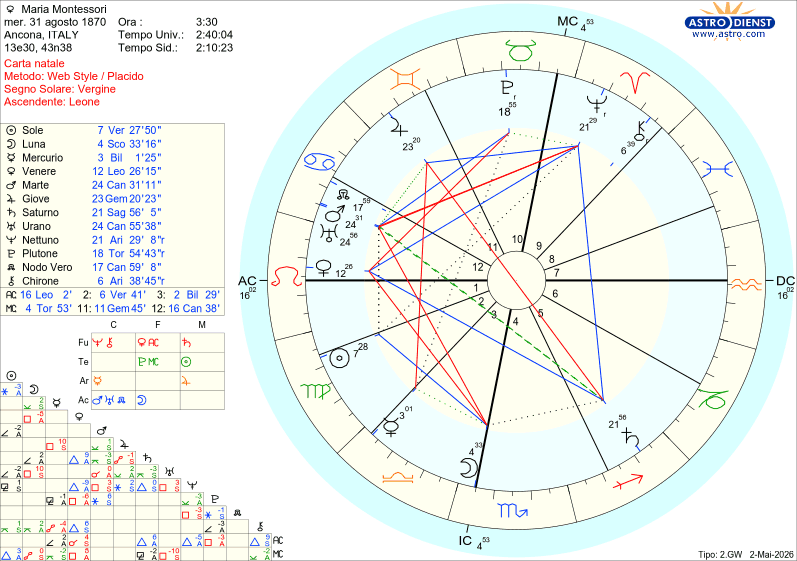

Il cielo racconta
Maria Montessori
Ancona, 31 agosto 1870
TEMA NATALE DI MARIA MONTESSORI
NATA AD ANCONA
IL 31/08/1870 ALLE ORE 03:30
VERGINE ASCENDENTE LEONE

Maria Montessori: la Profezia dei Bambini e il Dramma Segreto del Figlio Ritrovato
Maria Montessori è stata una delle donne più rivoluzionarie del Novecento. Medico, scienziata e pedagogista, ha spazzato via i vecchi metodi educativi rigidi per creare un sistema che oggi porta il suo nome in tutto il mondo.
Tutti conoscono i suoi trionfi, ma quasi nessuno conosce i lati d'ombra della sua vita: le battaglie contro i pregiudizi, l'esilio in India e, soprattutto, il dramma del figlio segreto che dovette abbandonare per difendere la sua carriera. La sua mappa astrale rivela che questo destino monumentale e doloroso era già scritto nel suo cielo di nascita.
1. Il codice dell'Infanzia stampato nel cielo
Perché Maria Montessori ha dedicato ogni respiro ai bambini? Per l'astrologia non è una coincidenza, ma un mandato dell'universo.
La firma delle stelle: Nel suo tema natale, la Luna (l'infanzia, la maternità) domina la Quarta Casa (le radici). A farle eco c'è una congiunzione di fuoco: Marte e Urano nel segno del Cancro (il segno dell’ infanzia).
Il segreto stupefacente: Questa non è una combinazione dolce. È la firma di una guerriera: una battaglia feroce, innovativa e rivoluzionaria combattuta per i bambini e attraverso i bambini. Come se non bastasse, Mercurio (la mente) è isolato nella Terza Casa, il che ne amplifica la forza a dismisura, focalizzando tutta la sua intelligenza sullo studio dell'età evolutiva.
2. Il "Sesto Senso" clinico: fondere scienza e intuito
I primi successi della Montessori arrivarono con i bambini definiti "frenastenici" (con disabilità cognitive). Mentre gli altri medici si arrendevano, lei capì che avevano solo bisogno di un metodo diverso, ottenendo risultati sbalorditivi.
Questa incredibile capacità di osservazione nasce dal sestile tra il suo Sole in Vergine (la logica, la precisione, lo scienziato) e la Luna in Scorpione (l'intuito psicologico profondo, la capacità di scavare nell'ombra). Maria Montessori vedeva dove gli altri erano ciechi.
3. La guerra ai vecchi metodi: la Libertà Organizzata
La Montessori capì che le scuole dell'epoca erano prigioni che soffocavano la mente. La sua formula? Dare struttura per generare libertà.
La precisione da brividi: Nel suo cielo c'è un'opposizione netta tra Saturno in Sagittario in Quinta Casa (la necessità di regole e materiali strutturati nell'educazione) e Giove in Gemelli nell'Undicesima Casa (la mente aperta, i grandi progetti collettivi).
Nessuna contraddizione: per lei la disciplina e la scelta autonoma dovevano camminare insieme. Il Sole in Vergine e Saturno in Quinta Casa confermano che il suo non era un sogno romantico, ma un metodo rigorosamente scientifico.
4. Il segreto più doloroso: una Venere nell'ombra
Dietro il successo internazionale si nascondeva una ferita lacerante. Maria visse una storia d'amore clandestina con il collega Giuseppe Montesano. Da questa unione nacque un figlio, Mario. Per non distruggere la sua carriera in un'Italia fortemente patriarcale, la Montessori non poté riconoscerlo e dovette affidarlo a un'altra famiglia, ricongiungendosi a lui solo quando era ormai adolescente.
Il colpo di scena: Questa tragedia privata è fotografata in modo sconvolgente da Venere nella Dodicesima Casa (gli amori segreti, i sacrifici indicibili) in quadratura violenta a Plutone nella Decima Casa (il potere, lo status pubblico, la carriera).
Maria dovette vivere l'amore e la maternità nell'oscurità (Dodicesima Casa) per proteggere la sua missione pubblica (Decima Casa). L'opposizione tra Saturno e Giove, tra quinta e undicesima casa, descrive proprio questo: la rinuncia al proprio ruolo di madre per un disegno collettivo molto più grande.
5. Dal dramma personale all'Educazione Cosmica
Durante la Seconda Guerra Mondiale, la Montessori si trasferì in India per sette anni. Lì il suo metodo divenne spirituale, trasformandosi nel concetto di "Educazione Cosmica": il bambino visto come portatore di una scintilla universale di pace.
Questo salto quantico è firmato da Nettuno nella Nona Casa (i viaggi lunghi, le filosofie orientali, la spiritualità) che abbraccia Saturno e Giove. Il suo cielo ha preso il sacrificio personale e lo ha trasformato in un dono universale per l'umanità.
Il verdetto delle stelle
Il tema natale di Maria Montessori non mostra una vita comoda, ma una vera e propria missione esistenziale. Ha pagato a caro prezzo il suo successo, rinunciando alla luce del sole sui suoi affetti più cari per darla ai bambini di tutto il mondo. Le stelle l'avevano programmata per non piegarsi, e lei ha obbedito.
È incredibile pensare che la sua Venere segreta in Dodicesima casa e Saturno leso in quinta casa raccontino con tanta precisione il dramma di quel figlio nascosto per anni, non trovi?